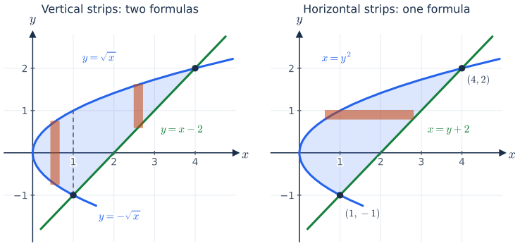
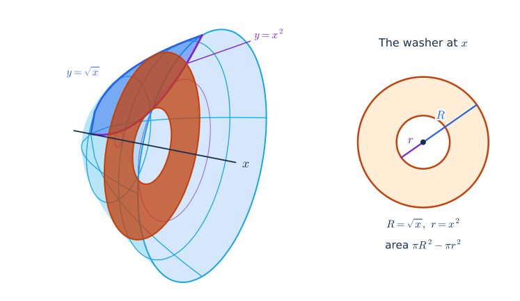
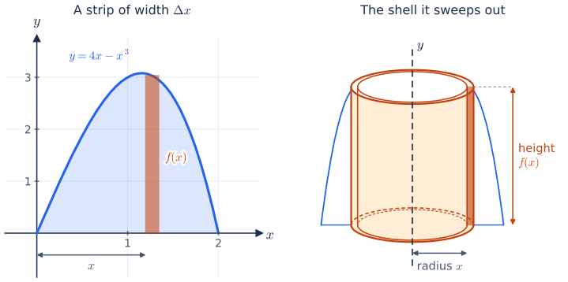
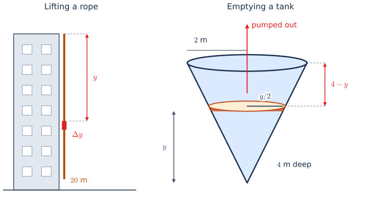
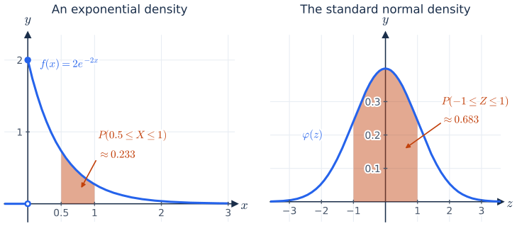

Module 12Applications of integration and improper integrals
Use integrals to add up quantities that are spread out (areas between curves, volumes, lengths of curves, the work done by varying forces, centres of mass), all with one method: slice, approximate, add and take the limit. Then extend integrals to infinite intervals and to functions that blow up, and use them to compute probabilities.
⏱ 270 minYou need: Modules 1 to 11, in particular the definite integral (Module 9), the Fundamental Theorem and substitution (Module 10), and integration by parts and Simpson’s rule (Module 11)
In this module you will
Set up an integral for a quantity by slicing it, approximating each slice, adding the slices and taking the limit
Find areas between curves with vertical or horizontal strips, and volumes by slicing, discs, washers and cylindrical shells
Compute arc lengths, exactly or numerically, the work done by variable forces, and the centres of mass of rods and plates
Decide whether an improper integral converges, with the definitions, the p-integrals and the comparison tests, and find its value when it does
Compute probabilities and expected values from a probability density, including the exponential and normal distributions
1
Slice, approximate, add
Module 9 found the area under a curve by slicing the region into thin strips, approximating each strip by a rectangle, adding the rectangles and taking the limit of the sums; Module 10 evaluated such limits with antiderivatives. The same four steps compute much more than areas: volumes, lengths, work, masses, centres of mass and probabilities. This section shows the method on one example. The rest of the module uses it again and again.
Suppose a metal rod 2 metres long is thicker towards one end, so that its density, its mass per unit length, is
ρ(x)=1+x2 kg/m
at the point x metres from the thin end. (The rod is hypothetical; ρ is the Greek letter “rho”.) What is its mass? If the density were constant, the mass would be density times length. It is not constant, but along a short piece of the rod it hardly changes. So slice the rod into n pieces of length Δx=2/n, with ends x0=0,x1,…,xn=2. The ith piece has a density close to ρ(xi−1), its value at the piece’s left end, so its mass is about ρ(xi−1)Δx. Adding the pieces gives an estimate Ln of the mass of the rod; using the right ends instead gives another, Rn:
LnRn=i=1∑nρ(xi−1)Δx,=i=1∑nρ(xi)Δx.
n
Ln
Rn
4
3.75
5.75
10
4.28
5.08
100
4.6268
4.7068
1000
4.66267
4.67067
The density increases along the rod, so each piece is heavier than its left-end estimate and lighter than its right-end estimate: the true mass M satisfies Ln≤M≤Rn for every n. Both sums are Riemann sums of ρ on [0,2], so both approach ∫02ρ(x)dx as n→∞ (Module 9), and M, squeezed between them, must equal that integral:
M=∫02(1+x2)dx=[x+3x3]02=2+38=314≈4.667 kg.
The table agrees: for n=1000 the two sums pin the mass between 4.66267 and 4.67067 kg.
Key idea
Slice, approximate, add, take the limit. To compute a quantity Q spread over an interval [a,b]:
Slice[a,b] into n thin pieces of width Δx.
Approximate the part of Q in the piece near x by q(x)Δx, for a continuous function q: density times length, height times width, force times distance.
Add the pieces: Q≈∑i=1nq(xi∗)Δx, a Riemann sum.
Take the limit as n→∞:Q=∫abq(x)dx.
Why is the limit exactly Q, and not only close to it? The rod shows the reason. On each piece a continuous q has a least and a greatest value (the Extreme Value Theorem, Module 3). If the true amount in every piece lies between Δx times the least value and Δx times the greatest, then Q lies between two Riemann sums of q: the one that samples each piece where q is least, and the one that samples it where q is greatest. Both sums approach ∫abq(x)dx, so Q is squeezed to that value, as in the squeeze theorem of Section 2.6. When you set up a new application, this is the property to look for. An approximation without such a guarantee can give a wrong answer, as Section 12.5 shows.
Leibniz’s notation keeps the method in view. Write the amount in a slice of width dx as dQ=q(x)dx, here dm=ρ(x)dx, and the total as Q=∫abdQ.
Tip
Units check a set-up: the integrand times dx must have the units of the answer, here kg/m×m=kg; for a volume, an area times a length; for work, a force times a distance.
Watch out
Each term of the sum is the amount in a slice, q(xi)Δx, not the value q(xi) alone. The right-end densities of the rod add up to 1.25+2+3.25+5=11.5 for n=4 and to about 2335 for n=1000: without the factor Δx, the sums grow without bound instead of settling down to the mass.
2
Area between curves
When a region lies between two curves, y=f(x) above and y=g(x) below, for a≤x≤b, slice it by vertical lines. The strip at x, of width Δx, is nearly a rectangle of height f(x)−g(x), top minus bottom. Adding the strips and taking the limit gives the area.
Definition 12.1Area between curves
Let f and g be continuous on [a,b], with g(x)≤f(x) for a≤x≤b. The area of the region between their graphs, the set of points (x,y) with a≤x≤b and g(x)≤y≤f(x), is
A=∫ab(f(x)−g(x))dx.
With g=0 this is the area under a curve, as in Module 9. The curves may dip below the x-axis: only the height f(x)−g(x) of each strip matters, and moving both curves up by the same amount does not change it. For “the region enclosed by” two curves, the limits a and b are where the curves meet: solve f(x)=g(x).
Example 12.1Two parabolas✓ Checked
Find the area of the region enclosed by the parabolas y=4−x2 and y=x2−2x.
The curves meet where 4−x2=x2−2x, that is, 2x2−2x−4=0, or x2−x−2=0. This factors as (x−2)(x+1)=0, so the curves meet at x=−1 and x=2. Between the two meeting points the same curve stays on top (otherwise the continuous function f−g would be 0 somewhere in between, by the Intermediate Value Theorem of Module 3), so test one point: at x=0,4−x2=4 and x2−2x=0, so y=4−x2 is the top. Top minus bottom is (4−x2)−(x2−2x)=4+2x−2x2, and
When the curves cross, the top and the bottom swap at each crossing. An area counts every strip as positive, so split the interval at the crossings; in one formula, the area is ∫ab∣f(x)−g(x)∣dx.
Example 12.2Curves that cross✓ Checked
Find the area of the region between y=sinx and y=cosx for 0≤x≤π.
The curves cross where sinx=cosx, that is, tanx=1; in [0,π] that happens only at x=π/4. At x=0,cosx=1 and sinx=0, so cosx is on top on [0,π/4]; at x=π/2,sinx=1 and cosx=0, so sinx is on top on [π/4,π]. Hence
Without the split, the integral is not the area: ∫0π(cosx−sinx)dx=[sinx+cosx]0π=−1−1=−2. The strips where sinx is on top count as negative, and an area is never negative. Before integrating, find where the curves cross and which one is on top between the crossings.
Horizontal strips
Some regions are easier to slice the other way: choose the direction in which every strip runs between the same two curves. Figure 12.1 shows the region between the parabola x=y2 and the line y=x−2. A vertical strip runs from the lower half of the parabola, y=−x, to its upper half when 0≤x≤1, but from the line to the upper half when 1≤x≤4: two formulas, so two integrals. Every horizontal strip runs from the parabola on the left to the line on the right. For a region between a left boundary x=xL(y) and a right boundary x=xR(y), for c≤y≤d, a horizontal strip of height Δy has length xR(y)−xL(y), right minus left, and
A=∫cd(xR(y)−xL(y))dy.

Figure 12.1
The region between the parabola x=y2 and the line y=x−2, which meet at (1,−1) and (4,2). Left: a vertical strip runs from y=−x to y=x when x<1, but from y=x−2 to y=x when x>1, so vertical strips need two integrals. Right: every horizontal strip runs from x=y2 to x=y+2, so one integral is enough (Example 12.3).
Example 12.3Horizontal strips✓ Checked
Find the area of the region between x=y2 and y=x−2, with horizontal strips and with vertical strips.
Horizontal strips. Write the line as x=y+2. The curves meet where y2=y+2, that is, (y−2)(y+1)=0: at y=−1 and y=2, the points (1,−1) and (4,2). At y=0 the line is at x=2 and the parabola at x=0, so the line is on the right:
Vertical strips. From x=0 to x=1 a strip runs from −x to x; from x=1 to x=4, from x−2 to x. With the antiderivatives 34x3/2 and 32x3/2−21x2+2x,
A=∫012xdx+∫14(x−x+2)dx=34+619=29.
The same area, as it must be, with more work.
Watch out
In an integral with respect to y, everything is written in terms of y: the boundaries as x=…, the length of a strip as right minus left (not top minus bottom), and the limits as values of y. In Example 12.3 the limits are −1 and 2, the y-coordinates of the meeting points, not their x-coordinates 1 and 4.
3
Volumes by slicing
Cross-sections
Slice a loaf of bread: each slice is nearly a flat slab, whose volume is the area of its face times its thickness. The same idea gives the volume of any solid whose cross-sections you know. Put an x-axis through the solid, and let A(x) be the area of its cross-section by the plane perpendicular to the axis at x. A slab of thickness Δx at x has volume about A(x)Δx. Adding and taking the limit:
Definition 12.2Volume by slicing
Let a solid lie between the planes perpendicular to the x-axis at x=a and x=b, and let its cross-section at x have area A(x), where A is continuous on [a,b]. The volume of the solid is
V=∫abA(x)dx.
A check: a prism or cylinder of height h whose cross-sections all have the same area B has V=∫0hBdx=Bh, base times height, the familiar formula.
Example 12.4A pyramid✓ Checked
A pyramid has a square base of side s and height h. Find its volume.
Put the apex at the origin and the x-axis down through the centre of the base, so that x is the depth below the apex and the base is at x=h. The cross-section at depth x is a square. By similar triangles, its side grows in proportion to the depth, from 0 at the apex to s at the base, so it is sx/h. So A(x)=(sx/h)2=s2x2/h2, and
V=∫0hh2s2x2dx=h2s2⋅3h3=31s2h.
A pyramid fills one third of the box with the same base and height. The argument works for a base of any shape: the cross-section at depth x is the base scaled by the factor x/h, so its area is Bx2/h2, where B is the area of the base (areas scale by the square of the factor), and V=∫0hBx2/h2dx=31Bh. A cone of radius r is the case B=πr2:V=31πr2h.
Discs and washers
Rotate the region under the graph of a continuous function f≥0, for a≤x≤b, about the x-axis. It sweeps out a solid of revolution. Each point of the region moves on a circle about the axis, so the cross-section at x is a disc of radius f(x) and area πf(x)2, and
V=π∫abf(x)2dx(discs).
Example 12.5The volume of a ball✓ Checked
Find the volume of a ball of radius a.
The ball is swept out by the half disc under y=a2−x2,−a≤x≤a. Here f(x)2=a2−x2, so the square root disappears:
If the region does not reach the axis, the solid has a hole. Let the region lie between y=R(x) and y=r(x), with 0≤r(x)≤R(x). The cross-section at x is then a washer, a disc of radius R(x) with a hole of radius r(x) (Figure 12.2), of area πR(x)2−πr(x)2, and
V=π∫ab(R(x)2−r(x)2)dx(washers).
The outer radiusR(x) is the distance from the axis to the farther boundary, and the inner radiusr(x) the distance to the nearer one.

Figure 12.2
Left: the region between y=x and y=x2,0≤x≤1 (dark blue), rotates about the x-axis and sweeps out a solid shaped like a thick bowl (Example 12.6); its outer surface is drawn as a transparent shell, and the purple circles lie on its inner surface. The slice at x (orange) is a washer. Right: the washer seen along the axis, with outer radius R=x and inner radius r=x2.
Example 12.6A solid with a hole✓ Checked
Find the volume of the solid swept out when the region between y=x and y=x2 rotates about the x-axis.
The curves meet where x=x2; squaring, x=x4, that is, x(x3−1)=0, so at x=0 and x=1. For 0<x<1,x>x2 (at x=41,21>161), so R(x)=x and r(x)=x2:
V=π∫01(x−x4)dx=π(21−51)=103π≈0.942.
Watch out
The area of a washer is πR2−πr2, not π(R−r)2. With R=2 and r=1 the washer has area 4π−π=3π, while π(R−r)2=π. Square each radius, then subtract.
Other axes
The same reasoning works for any axis: slice perpendicular to the axis, and measure each radius from the axis. For the y-axis the slices are horizontal, so the radii are functions of y, and V=π∫cd(R(y)2−r(y)2)dy. For a horizontal line y=k, a point at height y is at distance ∣y−k∣ from the axis.
Example 12.7Rotating about other lines✓ Checked
(a) A bowl has the shape of the surface swept out when the parabola y=x2 rotates about the y-axis. Find the volume of water in it when the water is h deep.
(b) The region between y=x and y=x2,0≤x≤1, rotates about the line y=−1. Find the volume of the solid.
(a) The water is the solid swept out by the region between the y-axis and the parabola, for 0≤y≤h. Its slice at height y is a disc whose radius is the x≥0 with x2=y, that is, y. So
V=π∫0h(y)2dy=π∫0hydy=2πh2.
The cylinder with the same height h and the same top radius h holds π(h)2h=πh2: the bowl holds exactly half as much.
(b) The slices perpendicular to the axis y=−1 are vertical, so integrate in x. Both curves lie above the axis, and for 0<x<1 the line y=x is farther from it, since x>x2. The radii are the distances from the axis: R(x)=x−(−1)=x+1 and r(x)=x2+1. So
Radii are distances from the axis of rotation, not heights. Rotating about y=−1, the radius of the curve y=x is x+1, not x. Rotating the same region about y=2, which lies above it, the outer radius belongs to the lower curve: R(x)=2−x2 and r(x)=2−x.
4
Cylindrical shells
Rotate the region under y=4x−x3,0≤x≤2, about the y-axis. Washers would need horizontal slices, and the radii of the slice at height y are the solutions x of the cubic equation 4x−x3=y: hard to find. Slice the region the other way, into vertical strips. A thin strip at distance x from the axis, of width Δx and height f(x), sweeps out a thin cylindrical shell, a tube of radius x, height f(x) and thickness Δx (Figure 12.3). Cut the tube along its height and unroll it: it is nearly a flat slab of length 2πx (the circumference), height f(x) and thickness Δx, with volume about 2πxf(x)Δx.
That approximation is good enough. A tube of constant height h between radii x and x+Δx has volume
π(x+Δx)2h−πx2h=2π(x+2Δx)hΔx,
the circumference at the middle of the tube times its height and thickness. Using x for the radius changes this by πh(Δx)2, at most πH(Δx)2 if H is the greatest height of the region; over all n shells that adds up to at most πH(b−a)Δx, which approaches 0. The height varies a little across the strip, but, as in Section 12.1, the solid that the strip sweeps out lies between the tubes with the least and the greatest heights on the strip. Adding the shells and taking the limit gives the shell method: when the region under the graph of a continuous function f≥0, for 0≤a≤x≤b, rotates about the y-axis,
V=2π∫abxf(x)dx.
For other regions and vertical axes, V=2π∫(radius)(height)dx, with the radius measured from the axis and the height top minus bottom. Shells and washers always give the same volume when both apply; Exercise 12.11 proves it for the region under a decreasing curve.

Figure 12.3
Cylindrical shells. Left: the region under y=4x−x3,0≤x≤2, with a strip of width Δx at distance x from the y-axis. Right: rotating about the y-axis (dashed), the strip sweeps out a thin shell of radius x, height f(x) and thickness Δx, inside the solid whose outline is drawn in blue. Unrolled, the shell is nearly a slab of volume 2πx⋅f(x)⋅Δx.
Example 12.8When shells beat washers✓ Checked
Find the volume of the solid swept out when the region under y=4x−x3,0≤x≤2, rotates about the y-axis.
The region lies above the x-axis: 4x−x3=x(2−x)(2+x)≥0 for 0≤x≤2. By shells, with radius x and height 4x−x3,
Washers slice perpendicular to the axis; shells slice parallel to it. About a horizontal axis, washers integrate in x and shells in y; about a vertical axis, washers integrate in y and shells in x. Choose the method whose slices need one formula and whose radii are easy to write down: shells when solving for x would be hard, as in Example 12.8.
Watch out
The radius of a shell is its distance from the axis. Rotating the region between y=x and y=x2,0≤x≤1, about the line x=2, the strip at x is 2−x from the axis, so V=2π∫01(2−x)(x−x2)dx=π/2. Using x as the radius would give the volume for the y-axis instead, π/6.
Compute itAreas and volumes with SymPy
SymPy finds where curves meet with solve and evaluates the integrals with integrate. For the region of Example 12.6:
Python
import sympy as sp
x, y = sp.symbols('x y')
print(sp.solve(sp.Eq(sp.sqrt(x), x**2), x)) # where the curves meetprint(sp.integrate(sp.sqrt(x) - x**2, (x, 0, 1))) # the area between themprint(sp.pi*sp.integrate(x - x**4, (x, 0, 1))) # the volume by washers
Output
[0, 1]
1/3
3*pi/10
Now compute one volume both ways: the region between y=x and y=x2,0≤x≤1, rotating about the y-axis. Shells have radius x and height x−x2. Horizontal slices at height y run from x=y to x=y, so the washers have R=y and r=y:
The two methods agree, as they must: they slice the same solid in different ways.
5
Arc length
How long is one arch of the curve y=sinx, from x=0 to x=π? A ruler measures straight segments, so approximate the curve by a polygon. Choose n+1 equally spaced points x0=0,x1,…,xn=π, and join the neighbouring points of the curve by straight chords. By Pythagoras’ theorem, the chord from (xi−1,f(xi−1)) to (xi,f(xi)) has length (Δx)2+(Δyi)2, where Δyi=f(xi)−f(xi−1). As n grows, the polygons hug the curve more closely:
Chords n
Length of the polygon
1
3.14159
2
3.72419
4
3.79009
8
3.81253
16
3.81827
64
3.82008
The lengths increase: the corners of each polygon are among the corners of the next, and replacing a chord by two chords with the same ends cannot shorten the path, because a straight segment is the shortest path between its ends. And they settle near 3.820. That number is what the length of the curve means.
Definition 12.3Arc length
The length (or arc length) of the graph of f from x=a to x=b is the limit, as n→∞, of the lengths of the polygons whose vertices are the points of the graph at n+1 equally spaced values a=x0<x1<⋯<xn=b, if the limit exists.
Theorem 12.1The arc length formula
If f′ is continuous on [a,b], the length of the graph of f from x=a to x=b is
L=∫ab1+f′(x)2dx.
Proof
By the Mean Value Theorem (Module 8), applied to f on [xi−1,xi], there is a point xi∗ in that interval with Δyi=f′(xi∗)Δx. So the ith chord has length
(Δx)2+f′(xi∗)2(Δx)2=1+f′(xi∗)2Δx,
and the polygon has length ∑i=1n1+f′(xi∗)2Δx. This is a Riemann sum of the function 1+f′(x)2, which is continuous on [a,b] because f′ is. So, as n→∞, the polygon lengths approach ∫ab1+f′(x)2dx (Module 9).
∎
In Leibniz’s notation, a tiny piece of the curve is the hypotenuse of a tiny right triangle with sides dx and dy:dL=(dx)2+(dy)2=1+(dy/dx)2dx. Module 16 extends the formula to curves given by parametric equations.
Example 12.9A hanging cable✓ Checked
A cable or chain hanging under its own weight takes the shape of a catenary (Module 6), the graph of y=acosh(x/a) for a constant a>0, where cosh is the hyperbolic cosine. Find the length of the catenary y=coshx from x=−1 to x=1.
Here f′(x)=sinhx, and the identity cosh2x−sinh2x=1 (Module 6) gives 1+sinh2x=cosh2x. Since coshx>0,1+f′(x)2=coshx, and
L=∫−11coshxdx=[sinhx]−11=2sinh1=e−e−1≈2.350.
In metres: a cable 2.350 m long, hung from two hooks 2 m apart at a height of cosh1≈1.543 m, sags to a lowest point 1 m above the ground.
When the square root in the arc length formula has no elementary antiderivative, numerical integration can approximate the length.
Example 12.10One arch of a sine wave✓ Checked
Find the length of y=sinx,0≤x≤π.
Here f′(x)=cosx, so L=∫0π1+cos2xdx. This is an elliptic integral. Its integrand has no elementary antiderivative, a fact we use without proof. Module 11 explains what this means. Use Simpson’s rule to approximate the length. With n=4 and Δx=π/4 you need g(x)=1+cos2x at five points: g(0)=g(π)=2,g(π/4)=g(3π/4)=3/2 and g(π/2)=1. So
With more points, Simpson’s rule gives S8≈3.82028 and S16≈3.8201978 (the Compute it box below), so the arch has length L≈3.8202, as the polygons suggested. That is about 21.6% longer than its base, π: a corrugated metal sheet whose profile is a sine wave needs that much more flat sheet than its width.
Watch out
An approximation must follow the direction of the curve. A staircase of n horizontal and n vertical steps, each of length 1/n, runs along the diagonal of a unit square from one corner to the other. Its length is 2n⋅n1=2 for every n, and it approaches the diagonal as closely as you like; yet the diagonal has length 2≈1.414. Each step replaces a piece of the diagonal of length (Δx)2+(Δy)2 by Δx+Δy, which is not close to it, however small the pieces. Chords point along the curve; steps do not.
Compute itArc length by computer
The polygons and Simpson’s rule are a few lines of Python each. math.hypot(dx, dy) is dx2+dy2, Pythagoras’ theorem:
Python
import math
defpolygon(f, a, b, n):
"""Polygon through n + 1 equally spaced points of y = f(x)."""
xs = [a + (b - a)*i/n for i inrange(n + 1)]
returnsum(math.hypot(xs[i + 1] - xs[i], f(xs[i + 1]) - f(xs[i]))
for i inrange(n))
defsimpson(g, a, b, n):
"""Simpson's rule with n subintervals (n even)."""
h = (b - a)/n
inner = sum((4if i % 2else2)*g(a + i*h) for i inrange(1, n))
return h/3*(g(a) + inner + g(b))
P = polygon(math.sin, 0, math.pi, 1000)
print(f"polygon, 1000 chords: {P:.10f}")
g = lambda x: math.sqrt(1 + math.cos(x)**2)
for n in [4, 8, 16, 32]:
print(f"Simpson, n = {n:2d}: {simpson(g, 0, math.pi, n):.10f}")
Output
polygon, 1000 chords: 3.8201972963
Simpson, n = 4: 3.8291789256
Simpson, n = 8: 3.8202824061
Simpson, n = 16: 3.8201978136
Simpson, n = 32: 3.8201977890
Even a thousand chords are off by about 5×10−7, while Simpson’s rule with n=32 agrees with the true length to all ten decimals shown. SymPy evaluates the integral to as many digits as you ask. Asked for an antiderivative, it returns the integral unevaluated: it found no elementary antiderivative. (There is none, but SymPy’s failure alone would not prove that.)
Python
import sympy as sp
x = sp.symbols('x')
print(sp.Integral(sp.sqrt(1 + sp.cos(x)**2), (x, 0, sp.pi)).evalf(20))
print(sp.integrate(sp.sqrt(1 + sp.cos(x)**2), x))
Lift a 2 kg bag of flour steadily by 1.5 m. You exert a force equal to its weight, mg=2×9.8=19.6 newtons (N), where g≈9.8 m/s² is the acceleration due to gravity (Module 1). A constant force F acting through a distance d does workW=Fd, here 19.6×1.5=29.4 joules (J): a force of 1 newton acting through 1 metre does 1 joule of work. When the force changes along the way, slice the path. On a short piece of length Δx the force is nearly constant, so the work there is about F(x)Δx.
Definition 12.4Work
If a continuous force F(x), acting along a line, moves an object from x=a to x=b, the work done is
W=∫abF(x)dx.
Springs. Stretch a spring x metres beyond its natural length, and it pulls back with a force proportional to x:F(x)=kx, where the spring constantk is measured in N/m. This is Hooke’s law. It holds for stretches that are not too large (within the spring’s elastic limit), and for compressions too. To stretch the spring you must exert the force kx yourself.
Example 12.11Stretching a spring✓ Checked
A force of 30 N holds a spring stretched 0.15 m beyond its natural length. How much work does it take to stretch it (a) from its natural length to 0.15 m beyond it, and (b) from 0.15 m to 0.30 m beyond it?
By Hooke’s law 30=k×0.15, so k=200 N/m, and the force needed at stretch x is 200x N. An antiderivative of 200x is 100x2.
(a)W=∫00.15200xdx=[100x2]00.15=100×0.0225=2.25 J.
(b)W=[100x2]0.150.30=9−2.25=6.75 J: three times as much for the same extra 0.15 m, because the spring pulls harder the more it is stretched.
Watch out
“Force times distance” holds only for a constant force. In (a), 30×0.15=4.5 J is twice the true work: the force grows from 0 to 30 N, and its average over the stretch is 15 N. And x is the stretch beyond the natural length, not the length of the spring.
Lifting a rope. When different parts of an object move different distances, slice the object instead of the path.
Example 12.12Lifting a rope✓ Checked
A rope 20 m long, with a mass of 0.4 kg per metre, hangs from the top of a building (Figure 12.4, left). How much work does it take to pull the whole rope up to the top?
Measure the depth y downwards from the top. The piece of rope between depths y and y+Δy has mass 0.4Δy kg and weight 0.4×9.8Δy=3.92Δy N, and it is lifted about y metres. So its work is about 3.92yΔy J, and
W=∫0203.92ydy=3.92×2202=784 J.
Slicing the motion instead gives the same answer: when x metres have been pulled up, the hanging part weighs 3.92(20−x) N, and ∫0203.92(20−x)dx=784 J.
Watch out
The rope weighs 3.92×20=78.4 N, but the work is not 78.4×20=1568 J: only the bottom end rises 20 m, and the top end hardly moves. On average the rope rises 10 m, and 78.4×10=784 J. That average is the depth of the rope’s centre of mass (Section 12.7).
Pumping a liquid. To empty a tank, slice the liquid into thin horizontal layers: each layer is lifted as a whole to the outlet.

Figure 12.4
Left: a rope 20 m long hangs from the top of a building; the piece at depth y, of length Δy, is lifted y metres (Example 12.12). Right: the cone-shaped tank of Example 12.13, 4 m deep with a top of radius 2 m; the layer of water at height y above the vertex has radius y/2 and is pumped up 4−y metres to the top.
Example 12.13Emptying a tank✓ Checked
The cone-shaped tank of Example 7.2, 4 m deep with its vertex at the bottom and a top of radius 2 m, is full of water, whose density is 1000 kg/m³. How much work does it take to pump all the water out over the top?
Let y be the height above the vertex (Figure 12.4, right). As in Example 7.2, similar triangles give the radius of the water’s surface at height y as y/2. The layer of water between heights y and y+Δy is nearly a disc of radius y/2 and thickness Δy, so it has
about 164 kJ. A pump of 500 watts, that is, 500 joules per second, would need about 5.5 minutes, if it wasted no energy.
Watch out
Use weight, not mass: a layer of mass m kilograms needs a force of mg newtons to lift it, so the factor g=9.8 must appear, or the answer is not in joules. And measure the distance from the layer to where the liquid goes: to the top here, 4−y; to a spout 1 m above the top, 5−y.
7
Centre of mass
A seesaw balances when the law of the lever holds: mass times distance from the pivot is the same on both sides. Masses m1,…,mn at positions x1,…,xn on a line balance at their centre of mass
xˉ=m1+⋯+mnm1x1+⋯+mnxn=∑mi∑mixi,
read “x bar”. The sum ∑mixi is the moment of the masses about the origin. Measured from xˉ instead, the moments cancel: ∑mi(xi−xˉ)=∑mixi−xˉ∑mi=0. For example, children of 30 kg and 20 kg sitting at x=0 and x=3 m balance at xˉ=(30⋅0+20⋅3)/50=1.2 m, nearer the heavier child.
A rod. For a rod along [a,b] with density ρ(x), slice: the piece at x has mass about ρ(x)Δx and moment about xρ(x)Δx. Adding and taking limits:
Definition 12.5Centre of mass of a rod
A rod along [a,b] with continuous density ρ(x)>0 has mass M=∫abρ(x)dx and centre of mass
xˉ=M1∫abxρ(x)dx.
Example 12.14The rod of Section 12.1✓ Checked
Find the centre of mass of the rod of Section 12.1, whose density is ρ(x)=1+x2 kg/m for 0≤x≤2.
Its mass is M=314 kg. Its moment is
∫02x(1+x2)dx=[2x2+4x4]02=2+4=6 kg m,
so xˉ=6/314=79≈1.29 m from the thin end: beyond the middle of the rod, towards its denser end, as it should be.
A thin plate. A thin flat plate is called a lamina. Here its density (mass per unit area) is uniform, the same at every point; Module 19 lets it vary. The centre of mass of a plate is a point (xˉ,yˉ) in its plane. Let the plate occupy the region between y=g(x) and y=f(x),a≤x≤b, and slice it into vertical strips. The strip at x is nearly a rectangle of width Δx and height f(x)−g(x), which balances at its centre, (x,21(f(x)+g(x))), by symmetry; its mass is the density times its area. Weighting each strip’s coordinates by its mass and taking limits gives the formulas below. The density cancels, so the centre of mass depends only on the shape. For yˉ, the height of a strip’s centre times its area is 21(f+g)(f−g)Δx=21(f2−g2)Δx.
Definition 12.6Centroid of a plate
Let f and g be continuous on [a,b] with g≤f. Suppose the region between their graphs has area A>0. Its centroid is the point (xˉ,yˉ) with
A half-disc plate balances on a point 42% of the way up its radius, below the halfway mark, because more of its area lies near the straight edge.
Watch out
The formula for yˉ has 21(f2−g2), not 21(f−g)2; and both coordinates are divided by the area (for a rod, by the mass). A quick check catches most slips: the centroid of a region lies between its leftmost and rightmost points and between its lowest and highest points.
8
Improper integrals
So far every integral has had a finite interval and a bounded integrand. Probabilities, and many questions in physics, need more: the area under y=1/x2 for all x≥1, or under y=1/x for 0<x≤1, where the curve shoots up near 0. Such integrals are improper. They are defined as limits of ordinary integrals.
Infinite intervals
The area under y=1/x2 from 1 to t is ∫1tx−2dx=[−x1]1t=1−t1, and the area under y=1/x is ∫1tx−1dx=lnt:
t
∫1tdx/x2
∫1tdx/x
10
0.9
2.30259
100
0.99
4.60517
104
0.9999
9.21034
106
0.999999
13.8155
As t→∞, the first approaches 1, while the second grows without bound, slowly. The region under 1/x2, infinitely long, has a finite area, 1; the region under 1/x does not. The two curves look alike, but 1/x2 falls to 0 much faster.
Definition 12.7Improper integral over an infinite interval
Let f be continuous on [a,∞). Then
∫a∞f(x)dx=t→∞lim∫atf(x)dx.
The improper integral converges if this limit exists (as a finite number), and diverges otherwise. In the same way, for f continuous on (−∞,b],∫−∞bf(x)dx=limt→−∞∫tbf(x)dx. For f continuous on R,
∫−∞∞f(x)dx=∫−∞cf(x)dx+∫c∞f(x)dx,
for any number c, provided both integrals on the right converge; if either diverges, so does the integral on the left.
∫−∞∞ reads “the integral from minus infinity to infinity”. The choice of c does not matter: moving it moves an ordinary integral from one side to the other. The limits as t→±∞ are the limits at infinity of Module 3.
Example 12.16Integrals over infinite intervals✓ Checked
Evaluate (a) ∫0∞e−xdx, (b) ∫0∞xe−xdx and (c) ∫−∞∞1+x2dx.
(a)∫0te−xdx=[−e−x]0t=1−e−t→1 as t→∞. The integral converges, to 1.
(b) Integration by parts (Module 11), with u=x and dv=e−xdx, gives the antiderivative −xe−x−e−x, so ∫0txe−xdx=1−(t+1)e−t. As t→∞,te−t=t/et→0, because powers grow more slowly than exponentials (Theorem 7.7), and e−t→0. The integral converges, to 1.
(c) Split at c=0. As t→∞,∫0t1+x2dx=arctant→2π (Module 6); and as t→−∞,∫t01+x2dx=−arctant→2π. Both halves converge, so the integral converges, to π.
Watch out
∫−∞∞xdx is not 0. It is true that ∫−ttxdx=0 for every t, but the definition takes the two halves separately, and ∫0∞xdx=limt→∞t2/2 does not exist: the integral diverges. A symmetric limit can be finite when the integral diverges, so it cannot be used to evaluate ∫−∞∞.
Unbounded integrands
Definition 12.8Improper integral of an unbounded function
Let f be continuous on [a,b) and unbounded near b. Then
∫abf(x)dx=t→b−lim∫atf(x)dx,
and the integral converges if the limit exists and diverges otherwise. Similarly, if f is continuous on (a,b] and unbounded near a,∫abf(x)dx=limt→a+∫tbf(x)dx. If f is continuous on [a,b] except at a point c inside it, near which it is unbounded, then ∫abf(x)dx=∫acf(x)dx+∫cbf(x)dx, which converges only if both integrals on the right do.
Example 12.17Unbounded integrands✓ Checked
Evaluate (a) ∫01xdx and (b) ∫01lnxdx.
(a) The integrand is unbounded near 0. For 0<t<1,∫t1x−1/2dx=[2x]t1=2−2t, which approaches 2 as t→0+. The integral converges, to 2.
(b)lnx→−∞ as x→0+. An antiderivative of lnx is xlnx−x (by parts, Module 11), so
∫t1lnxdx=(0−1)−(tlnt−t)=−1−tlnt+t.
As t→0+,tlnt→0 (Example 7.15), so the integral converges, to −1. The region between the graph and the x-axis is infinitely deep, yet its area is 1; the integral is negative because the region lies below the axis.
Watch out
An unbounded integrand can hide inside the interval. Applying the Fundamental Theorem blindly,
∫−11x2dx=?[−x1]−11=−1−1=−2,
which cannot be right: the integrand is positive. The Fundamental Theorem needs the integrand to be continuous on [−1,1], and 1/x2 is not even defined at 0. The integral is improper at 0, and its right half diverges: ∫t1x−2dx=t1−1→∞ as t→0+. So the integral diverges. Before integrating, look for points where the integrand blows up.
The p-integrals
The examples so far suggest one family of integrals to measure others against.
Theorem 12.2The p-integrals
Let p be a real number.
(a) ∫1∞xpdx converges if p>1, to p−11, and diverges if p≤1.
(b) ∫01xpdx converges if p<1, to 1−p1, and diverges if p≥1.
Proof
For p=1, an antiderivative of x−p is 1−px1−p (the power rule, Module 10).
(a) For t>1,∫1tx−pdx=1−pt1−p−1. If p>1, then 1−p<0 and t1−p=1/tp−1→0 as t→∞, so the integral approaches 1−p−1=p−11. If p<1, then t1−p→∞, and the integral diverges. If p=1,∫1tdx/x=lnt→∞.
(b) For 0<t<1,∫t1x−pdx=1−p1−t1−p. If p<1,t1−p→0 as t→0+, and the integral approaches 1−p1. If p>1,t1−p=1/tp−1→∞, and it diverges. If p=1,∫t1dx/x=−lnt→∞.
∎
For p≤0 the integral in (b) is an ordinary integral, since x−p is continuous on [0,1], and the formula 1/(1−p) still gives its value.
Key idea
Near infinity, 1/xp must fall faster than 1/x for the area to be finite; near 0, it must grow more slowly than 1/x. The borderline function 1/x fails at both ends, so ∫0∞dx/xp diverges for every p: one of its two halves always does.
Comparison
Most improper integrals cannot be evaluated exactly, but you can often decide whether they converge by comparing them with one you know.
Theorem 12.3The comparison test
Let f and g be continuous on [a,∞), with 0≤f(x)≤g(x) for all x≥a.
(a) If ∫a∞g(x)dx converges, so does ∫a∞f(x)dx, and ∫a∞f(x)dx≤∫a∞g(x)dx.
(b) If ∫a∞f(x)dx diverges, so does ∫a∞g(x)dx.
The same holds for integrals that are improper because the integrands are unbounded near an endpoint.
The condition f≥0 matters: f(x)=−1 and g(x)=1/x2 satisfy f≤g on [1,∞), and ∫1∞g converges, but ∫1∞f diverges.
Proof
(a) Let F(t)=∫atf(x)dx for t≥a, and let G=∫a∞g(x)dx. Since f≥0,F is increasing: making t larger adds the integral of a non-negative function. In the same way ∫atg(x)dx increases with t, towards its limit G, so it is at most G. Since f≤g, the comparison theorem for integrals (Module 9) gives
F(t)≤∫atg(x)dx≤G
for every t≥a. So F(t) rises as t grows but never passes G. A function that increases and is bounded above has a limit as t→∞, no larger than the bound. This is a form of the completeness of the real numbers, the property that the number line has no gaps, which the proof of the Intermediate Value Theorem used in Module 3; Module 14 states it for sequences, as the Monotone Convergence Theorem. So ∫a∞f(x)dx=limt→∞F(t) exists and is at most G.
(b) If ∫a∞g converged, then by (a) so would ∫a∞f.
∎
Example 12.18Two comparisons✓ Checked
Decide whether (a) ∫1∞e−x2dx and (b) ∫2∞lnxdx converge.
(a) For x≥1,x2≥x, so −x2≤−x and 0<e−x2≤e−x. As in Example 12.16(a), ∫1∞e−xdx=limt→∞(e−1−e−t)=e−1, which converges. By the comparison test, ∫1∞e−x2dx converges, and its value is at most 1/e≈0.368. (Its value, found numerically, is about 0.1394.)
(b) The function x−lnx has derivative 1−1/x>0 for x>1 and value 1 at x=1, so it is positive for x≥1:lnx<x. For x≥2, then, 0<lnx<x and lnx1>x1>0. Since ∫2∞dx/x=limt→∞(lnt−ln2) diverges, so does ∫2∞dx/lnx, by the comparison test (b).
Part (a) settles a question that matters below: ∫−∞∞e−x2dx converges. The interval [1,∞) is part (a), [0,1] gives an ordinary integral, and e−x2 is even, so the negative half behaves like the positive half.
Watch out
A comparison must go the right way. To show that ∫1∞x+1dx diverges, comparing with x1 proves nothing: x+11≤x1, and a function below one whose integral diverges may have an integral that converges or diverges. Compare from below instead: for x≥1,x+1≤2x, so x+11≥2x1, whose integral diverges (p=21).
Finding the right inequality takes some care. Often it is easier to compare the behaviour for large x:
Theorem 12.4Limit comparison
Let f and g be continuous and positive on [a,∞), with f(x)/g(x)→L as x→∞, where 0<L<∞. Then ∫a∞f(x)dx and ∫a∞g(x)dx either both converge or both diverge.
Proof
Since f(x)/g(x)→L>0, the ratio lies between 2L and 23L for all large enough x, say for x≥N, where N≥a; so 2Lg(x)≤f(x)≤23Lg(x) there. If ∫a∞g converges, then ∫N∞f converges by comparison with 23Lg. If ∫a∞g diverges, so does ∫N∞g, and then ∫N∞f diverges by comparison with 2Lg. Adding the ordinary integral ∫aNf does not change whether the integral converges.
∎
For the pitfall above, 1/x1/(x+1)=x+1x→1, so ∫1∞x+1dx diverges with ∫1∞xdx, with no inequality to find.
Gabriel’s horn
Example 12.19Gabriel’s horn✓ Checked
Rotate the region under y=1/x,x≥1, about the x-axis. The solid, a horn that grows thinner without end, is called Gabriel’s horn. Find its volume.
By discs, with an improper integral,
V=π∫1∞(x1)2dx=π∫1∞x2dx=π⋅1=π,
by Theorem 12.2 with p=2. The horn has a finite volume, π cubic units, although the region that sweeps it out has infinite area: ∫1∞dx/x diverges.
Going deeperThe horn’s surface area
When the graph of f≥0, with f′ continuous on [a,b], rotates about the x-axis, it sweeps out a surface of area
S=2π∫abf(x)1+f′(x)2dx.
The idea of the proof: each chord of the polygon of Section 12.5 sweeps out a band, the curved side of a cone with its tip cut off. Cutting the band open and flattening it shows that its area is π(r1+r2)ℓ, where r1 and r2 are the radii of its two ends and ℓ is its slant length, here the length of the chord, 1+f′(xi∗)2Δx. With r1+r2≈2f(xi∗), the bands add up to approximately a Riemann sum of 2πf(x)1+f′(x)2. (Module 20 treats the area of surfaces in general.) A check: for a ball of radius a,f(x)=a2−x2 gives f(x)1+f′(x)2=a for −a<x<a. The formula needs f′ continuous, and f′ is unbounded near ±a, so take the band of the sphere between x=−b and x=b, for 0<b<a: its area is 2π⋅a⋅2b=4πab, which approaches 4πa2, the familiar area of a sphere, as b→a.
For the horn, f(x)=1/x and f′(x)=−1/x2, so the integrand is
x2π1+x41≥x2π,
and ∫1∞2πdx/x diverges, so by the comparison test the horn’s surface area is infinite. The horn holds π cubic units of paint, yet no finite amount of paint could cover its outside with a coat of a fixed thickness d, which would need about Sd of paint. There is no contradiction: far along the horn, the paint that fills it forms a layer thinner than any fixed d.
Compute itImproper integrals with SymPy
SymPy’s integrate accepts sp.oo, infinity, as a limit, and answers oo when an integral diverges to infinity:
A Piecewise result reads like a definition by cases: 1/(p−1) when p>1, and otherwise the integral, left unevaluated: for p≤1 it diverges, so there is no value to give.
9
Probability
Probability densities
Some quantities are random: the time until the next request reaches a web server, the lifetime of a component, the error of a measurement. Their values cannot be predicted, but their probabilities can. The probability of an event, P(event), is a number from 0 to 1, the fraction of the time the event happens in a long run of repetitions; 1 means certain. A random variableX is a quantity whose value is decided by chance. A waiting time or a lifetime can take any value in an interval, so its probabilities cannot be listed value by value; a curve describes them instead.
Measure such an X many times and draw a histogram in which the area of each bar is the fraction of the measurements in its bin. With more measurements and narrower bins, the tops of the bars settle onto a curve y=f(x), and the fraction of the values between a and b settles onto the area under the curve from a to b.
Definition 12.9Probability density function
A probability density function is a function f with f(x)≥0 for every x and
∫−∞∞f(x)dx=1.
A random variable X has density f if, for all numbers a≤b,
P(a≤X≤b)=∫abf(x)dx.
A random variable with a density is called continuous.
The total area 1 says that X is certain to take some value. A density may jump, as the exponential density below does at 0; split the integrals at the jumps. Two consequences: a single value has probability P(X=a)=∫aaf(x)dx=0, so it does not matter whether the inequalities are strict (<) or not (≤); and f(x) is not a probability but a probability per unit length, P(x≤X≤x+Δx)≈f(x)Δx for a small Δx, so f(x) can be larger than 1.
The simplest density is the uniform density on [0,1], equal to 1 there and 0 elsewhere: for 0≤a≤b≤1,P(a≤X≤b)=b−a, the length of the interval. A computer’s random-number generator, such as Python’s random.random(), imitates it.
Example 12.20A density on an interval✓ Checked
Find the constant c for which f(x)=cx(2−x) for 0≤x≤2, and f(x)=0 otherwise, is a probability density function. Then find P(X≤21) for a random variable X with this density.
For c≥0,f≥0, since x(2−x)≥0 on [0,2]. The total area must be 1:
Average many values of X. About the fraction f(x)Δx of them lie in a thin slice near x, and they contribute about x⋅f(x)Δx to the average. Adding the slices and taking the limit gives the expected value.
Definition 12.10Expected value
The expected value, or mean, of a random variable X with density f is
μ=E(X)=∫−∞∞xf(x)dx,
provided the integral converges. (μ is the Greek letter “mu”.)
This is the centre of mass of a rod (Definition 12.5) with density f and total mass 1: the mean is the point where the graph of the density would balance. The density of Example 12.20 is symmetric about x=1, so its mean is 1, and the integral agrees: 43∫02x2(2−x)dx=43⋅34=1.
Watch out
Not every density has a mean. The function f(x)=π(1+x2)1 is a density (Example 12.16(c) shows that its total area is 1), and its graph is symmetric about 0. But, with the substitution u=1+x2,
∫0tπ(1+x2)xdx=2πln(1+t2)→∞,
so the integral for the mean diverges, and this random variable (it follows the Cauchy distribution) has no expected value. Symmetry gives the mean only when the integral converges.
The exponential distribution
Some events happen at random times, independently of one another, at a steady average rate of λ per unit of time (λ is the Greek letter “lambda”): the decays of the atoms in a radioactive sample, or requests arriving at a busy server. The waiting time X for the next such event is modelled by the exponential density with rateλ>0,
f(x)={λe−λx0if x≥0,if x<0.
It is a density: f≥0, and ∫0∞λe−λxdx=limt→∞(1−e−λt)=1. In the same way, for t≥0,
P(X>t)=∫t∞λe−λxdx=e−λt:
the chance of waiting longer than t decays exponentially (Module 6). For the mean, substitute u=λx and use Example 12.16(b):
E(X)=∫0∞xλe−λxdx=λ1∫0∞ue−udu=λ1.
At an average of λ events per second, the average wait is 1/λ seconds.
Example 12.21Waiting for a request✓ Checked
Suppose requests reach a server at random at an average rate of 2 per second (a hypothetical server), so that the waiting time X, in seconds, for the next request has the exponential density with λ=2 (Figure 12.5, left). Find (a) P(X>1), (b) P(0.5≤X≤1), (c) the mean wait and (d) the median wait, the time m with P(X≤m)=21.
(a)P(X>1)=e−2⋅1=e−2≈0.135.
(b)P(0.5≤X≤1)=P(X≥0.5)−P(X>1)=e−1−e−2≈0.233.
(c)E(X)=1/λ=0.5 s.
(d)P(X≤m)=1−e−2m=21 gives e−2m=21, so −2m=ln21=−ln2, and m=21ln2≈0.347 s. Half the waits are shorter than 0.347 s, although the mean is 0.5 s: the rare long waits pull the mean up. For radioactive atoms, the median lifetime ln2/λ is the half-life of exponential decay (Module 6).

Figure 12.5
Probabilities are areas under a density. Left: the exponential density f(x)=2e−2x of Example 12.21; the shaded area is P(0.5≤X≤1)=e−1−e−2≈0.233. The filled dot shows f(0)=2: a density can exceed 1. Right: the standard normal density φ, introduced below; the shaded area, P(−1≤Z≤1)≈0.683, is the probability of landing within one standard deviation of the mean.
The exponential distribution has a striking property. The conditional probabilityP(A∣B), read “the probability of A given B”, is the probability that A happens among the occasions on which B happens:
P(A∣B)=P(B)P(A and B),for P(B)>0.
Theorem 12.5The exponential distribution has no memory
If X has the exponential density with rate λ, then for all s≥0 and t≥0,
P(X>s+t∣X>s)=P(X>t).
Proof
If X>s+t then X>s, so the event “X>s+t and X>s” is the event X>s+t. Therefore
Having waited s seconds for a request does not bring the next one any closer: the remaining wait has the same distribution as a fresh one. As a model of lifetimes, the exponential distribution describes things that do not wear out, such as an atom that has not yet decayed; it is a poor model for things that age, such as tyres or people.
Watch out
The condition changes the answer. With λ=2, the probability of waiting more than 1.5 s in all, given that you have already waited 1 s, is P(X>0.5)=e−1≈0.368, not P(X>1.5)=e−3≈0.050: the second is the probability, before you start waiting, of waiting that long.
The normal distribution
The most important density in statistics is the bell-shaped standard normal density
φ(z)=2π1e−z2/2,
where φ is the Greek letter “phi” (Figure 12.5, right). Measurement errors, and many quantities that are the sum of many small independent effects, are distributed approximately like this, shifted and scaled; the reason, the central limit theorem of probability theory, is beyond this series.
Why the factor 1/2π? The total area must be 1. Section 12.8 showed, after Example 12.18, that ∫−∞∞e−x2dx converges. Its value is the Gaussian integral
∫−∞∞e−x2dx=π.
No antiderivative helps here, since e−x2 has no elementary one (Module 11). This module quotes the value; Module 19 proves it, by squaring the integral, which turns it into a double integral, and evaluating that in polar coordinates. The substitution z=2x, with dz=2dx (Module 10; the infinite limits stay infinite), gives
∫−∞∞e−z2/2dz=2∫−∞∞e−x2dx=2π,
so φ has total area 1. Its mean is 0: the integral ∫0∞ze−z2/2dz converges, to 1 (substitute u=z2/2), and zφ(z) is odd, so the two halves of the integral for the mean cancel.
More generally, the normal distribution with mean μ and standard deviationσ>0 (the Greek “sigma”) has the density
f(x)=σ2π1e−(x−μ)2/(2σ2),
a bell centred at μ whose width is proportional to σ. Exercise 12.12 shows that σ2 is the mean squared distance from the mean, and that the bell’s points of inflection are at μ±σ. The substitution z=(x−μ)/σ turns f into φ: if X has this density and Z has the standard normal density, then
P(a≤X≤b)=P(σa−μ≤Z≤σb−μ).
The same substitution, x=μ+σz with dx=σdz, shows that the mean of X is μ, as its name says, because φ has total area 1 and mean 0:
∫−∞∞xf(x)dx=∫−∞∞(μ+σz)φ(z)dz=μ⋅1+σ⋅0=μ.
One function, φ, serves every normal distribution.
Computing normal probabilities. Since φ has no elementary antiderivative, normal probabilities are computed numerically, for example with Simpson’s rule (Module 11), or with the error function of Module 11,
erf(x)=π2∫0xe−t2dt,
which calculators and programming languages provide (in Python, math.erf). Since φ is even, P(−c≤Z≤c)=2∫0cφ(z)dz for c>0, and the substitution z=2t turns this into an error function:
The rows for 1, 2 and 3 are the 68–95–99.7 rule: a normal random variable lies within one standard deviation of its mean about 68% of the time, within two about 95% of the time, and within three about 99.7% of the time. The values 1.645, 1.96 and 2.576 give 90%, 95% and 99%; statisticians use them to state how precise an estimate is.
Example 12.22A sensor’s error✓ Checked
Suppose a thermometer’s error, its reading minus the true temperature, is normally distributed with mean 0 °C and standard deviation 0.4 °C (a hypothetical sensor). Find the probability that (a) a reading is within 0.5 °C of the true temperature, and (b) the error is more than 1 °C either way.
(a) Standardise with z=x/0.4:0.5 °C becomes z=1.25, so
(b) Now 1 °C becomes z=2.5, and the error is more than 1 °C either way exactly when it is not within 1 °C:
P(∣X∣>1)=1−P(−2.5≤Z≤2.5)=1−erf(22.5)≈0.0124,
so about 1.2% of the readings are that far off.
Watch out
Standardise before you use the table or the error function. In Example 12.22, P(−0.5≤X≤0.5) is not erf(0.5/2)≈0.383: that would be the answer for a standard deviation of 1 °C, not 0.4 °C.
Compute itProbabilities by computer
Python’s math module has exp, log and erf, enough for the probabilities of Examples 12.21 and 12.22:
You can also watch probabilities emerge from simulated data. If U is uniform on [0,1), then X=−ln(1−U)/λ has the exponential density, because P(X>t)=P(1−U<e−λt)=e−λt. Simulate 100,000 waits (the seed fixes the random numbers, so you see the same output as here):
Python
import random
random.seed(2026)
waits = [-math.log(1 - random.random())/lam for _ inrange(100_000)]
long_waits = [w for w in waits if w > 1]
longer = [w for w in long_waits if w > 1.5]
print("mean of the waits: ", round(sum(waits)/len(waits), 4))
print("fraction over 1 s: ", round(len(long_waits)/len(waits), 4))
print("of those, over 1.5 s:", round(len(longer)/len(long_waits), 4))
Output
mean of the waits: 0.498
fraction over 1 s: 0.1343
of those, over 1.5 s: 0.3658
The simulated mean is close to 1/λ=0.5, the fraction of waits longer than 1 s is close to e−2≈0.135, and, among those, the fraction that last at least another 0.5 s is close to e−1≈0.368: the memoryless property, seen in data.
10
What you learned
Slice, approximate, add, take the limit. A quantity spread over [a,b] whose slice near x holds about q(x)Δx is ∫abq(x)dx. The true amount in each slice must lie between Δx times the least and the greatest values of q there; check the units of q(x)dx.
Areas: ∫ab(top−bottom)dx with vertical strips, ∫cd(right−left)dy with horizontal strips. Find where the curves meet, and split where they cross.
Volumes: ∫abA(x)dx for known cross-sections (a pyramid or cone is 31 base times height). For solids of revolution: discs π∫f2, washers π∫(R2−r2), shells 2π∫(radius)(height), with radii measured from the axis.
Arc length: L=∫ab1+f′(x)2dx, the limit of the lengths of inscribed polygons (Pythagoras and the Mean Value Theorem). Most arc length integrals need numerical evaluation.
Work: W=∫abF(x)dx, in joules when the force is in newtons and the distance in metres. A spring obeys F=kx (Hooke’s law); for ropes and tanks, slice the object and multiply each slice’s weight by its own distance.
Centre of mass: xˉ=∫xρdx/∫ρdx for a rod; for a plate, the centroid xˉ=A1∫x(f−g)dx,yˉ=A1∫21(f2−g2)dx, on any line of symmetry.
Improper integrals are limits of ordinary integrals, over infinite intervals or of unbounded integrands; they converge or diverge. ∫1∞dx/xp converges exactly when p>1,∫01dx/xp exactly when p<1. The comparison and limit comparison tests decide convergence without evaluating. Look for hidden infinities before using the Fundamental Theorem. Gabriel’s horn has volume π but infinite surface area.
Probability: a density f≥0 with total area 1 gives P(a≤X≤b)=∫abf(x)dx and mean μ=∫xf(x)dx (when it converges). The exponential density λe−λx has P(X>t)=e−λt, mean 1/λ and no memory. The normal density rests on the Gaussian integral ∫−∞∞e−x2dx=π (proved in Module 19); its probabilities come from the error function or numerical integration: P(∣Z∣≤c)=erf(c/2), the 68–95–99.7 rule.
11
Exercises
Exercise 12.1★Curves that cross
Find the area of the region enclosed by the curves y=x3 and y=x. Explain why ∫−11(x−x3)dx is not the answer.
Show solution✓ Checked
The curves meet where x3=x, that is, x(x−1)(x+1)=0: at x=−1, 0 and 1. On [0,1], at x=21, the line gives 21 and the cubic 81, so the line is on top. On [−1,0], at x=−21, the cubic gives −81 and the line −21, so the cubic is on top. Split at the crossing:
∫−11(x−x3)dx=0, because on [−1,0] the line is below the cubic and that part counts as −41: the integral is a net (signed) area, not the area. The region consists of two pieces, mirror images of each other through the origin, each of area 41.
Exercise 12.2★Discs and shells
The region under y=x,0≤x≤4, rotates (a) about the x-axis and (b) about the y-axis. Find both volumes, using shells in (b).
A check with washers: at height y, for 0≤y≤2, the region runs from x=y2 to x=4, so R=4,r=y2, and π∫02(16−y4)dy=π(32−532)=5128π.
Exercise 12.3★A spring
A spring has a natural length of 20 cm. A force of 12 N holds it at a length of 25 cm. How much work does it take to stretch it from a length of 25 cm to a length of 35 cm?
Show solution✓ Checked
Work in metres. At 25 cm the spring is stretched 0.05 m, so Hooke’s law gives 12=k×0.05 and k=240 N/m. Stretching from 25 cm to 35 cm takes the stretch from 0.05 m to 0.15 m:
The common wrong answer integrates over the lengths, from 0.25 to 0.35, and gets 120(0.1225−0.0625)=7.2 J; but Hooke’s law is about the stretch beyond the natural length, not the length itself.
Exercise 12.4★Converge or diverge?
Decide whether each integral converges. In (a) to (d), find its value if it does; in (e) and (f), use a comparison.
(a) ∫1∞x3/2dx
(b) ∫01x3/2dx
(c) ∫0∞e−3xdx
(d) ∫044−xdx
(e) ∫1∞x2cos2xdx
(f) ∫1∞x3+1xdx
Show solution✓ Checked
(a) A p-integral with p=23>1: it converges, to 3/2−11=2. Directly: ∫1tx−3/2dx=2−t2→2.
(b) Near 0 the p-integral needs p<1, and p=23: it diverges. Directly: ∫t1x−3/2dx=t2−2→∞ as t→0+.
(c)∫0te−3xdx=[−3e−3x]0t=31−e−3t→31: it converges, to 31.
(d) The integrand is unbounded near x=4. An antiderivative of (4−x)−1/2 is −24−x (substitute u=4−x), so for 0<t<4
∫0t4−xdx=4−24−t,
which approaches 4 as t→4−. It converges, to 4.
(e) For every x,0≤cos2x≤1, so for x≥1
0≤x2cos2x≤x21.
The p-integral∫1∞dx/x2 converges (p=2), so by the comparison test the integral converges, to a number at most 1. (Its value, found numerically, is about 0.327.)
(f) For large x the integrand behaves like x/x3/2=1/x, whose integral diverges, so look for a bound from below. For x≥1,x3≥1, so x3+1≤2x3 and x3+1≤2x3/2. Hence
x3+1x≥2x3/2x=2x1>0.
∫1t2xdx=2(t−1)→∞, so by the comparison test (b) the integral diverges. The limit comparison test gives the same in one line, as x→∞:
1/xx/x3+1=x3+1x3/2→1.
The bound x/x3+1≤1/x is true, but it proves nothing: it puts the integrand below a function whose integral diverges.
Exercise 12.5★★Horizontal strips
Find the area of the region enclosed by the parabola x=y2−4 and the line x+y=2. Why would vertical strips make this harder?
Show solution✓ Checked
Write the line as x=2−y. The curves meet where y2−4=2−y, that is, y2+y−6=0, or (y+3)(y−2)=0: at y=−3 and y=2, the points (5,−3) and (0,2). At y=0 the line is at x=2 and the parabola at x=−4, so the line is on the right. Right minus left is (2−y)−(y2−4)=6−y−y2, and
With vertical strips, the lower boundary is the lower half of the parabola, y=−x+4, all the way, but the upper boundary changes at x=0: for −4≤x≤0 it is the upper half of the parabola, y=x+4, and for 0≤x≤5 it is the line y=2−x. That means two integrals, both with square roots.
Exercise 12.6★★Two arc lengths
(a) Find the exact length of y=4x2−2lnx for 1≤x≤e. (Hint: 1+f′(x)2 is a perfect square.)
(b) Write down the integral for the length of y=x3,0≤x≤1, and estimate it with Simpson’s rule with n=4.
(b)f′(x)=3x2, so L=∫011+9x4dx. Use Simpson’s rule with n=4 and Δx=0.25. For g(x)=1+9x4, the values are g(0)=1,g(0.25)≈1.01743,g(0.5)=1.25,g(0.75)≈1.96154 and g(1)=10≈3.16228. Simpson’s rule gives
A cylindrical tank with a vertical axis has radius 1 m and height 3 m. It holds water to a depth of 2 m. How much work does it take to pump all the water out over the top of the tank? (Water has density 1000 kg/m³; take g=9.8 m/s².)
Show solution✓ Checked
Let y be the height above the bottom. The layer of water between heights y and y+Δy, for 0≤y≤2, is a disc of radius 1 m and thickness Δy: volume πΔy m³, mass 1000πΔy kg, weight 9800πΔy N. It is lifted 3−y metres, to the top of the tank. So
A check with the centre of mass: the water has mass 2000π kg, and its centre of mass is 1 m above the bottom. Every layer ends up at the top, 3 m up, so on average the water rises 2 m, and 2000π×9.8×2=39200π J. Two slips to avoid: the distance is 3−y, to the top of the tank, not 2−y, to the surface of the water; and the limits are 0 and 2, where the water is, not 0 and 3.
Exercise 12.8★★A centroid
Find the centroid of the region between y=x and y=x2,0≤x≤1, and check that it lies inside the region.
Show solution✓ Checked
For 0≤x≤1,x≥x2, so f(x)=x and g(x)=x2. The area is A=∫01(x−x2)dx=21−31=61. Then
The centroid is (21,52). At x=21 the region runs from y=41 to y=21, and 52=0.4 lies between them, so the centroid is inside the region.
Exercise 12.9★★How long does a component last?
The lifetime, in hours, of a type of electronic component has the exponential density with mean 2000 hours (hypothetical figures).
(a) Find λ, and the probability that a component lasts more than 3000 hours.
(b) A component has already worked for 1000 hours. Find the probability that it lasts at least another 3000 hours.
(c) Find the median lifetime.
Show solution✓ Checked
(a) The mean is 1/λ=2000, so λ=20001 per hour, and P(X>3000)=e−3000/2000=e−1.5≈0.223.
(b) By the memoryless property (Theorem 12.5) with s=1000 and t=3000,
P(X>4000∣X>1000)=P(X>3000)≈0.223.
Directly: P(X>1000)P(X>4000)=e−0.5e−2=e−1.5. The component’s past 1000 hours make no difference.
(c)1−e−m/2000=21 gives e−m/2000=21, so m=2000ln2≈1386 hours, well below the mean.
Exercise 12.10★★★Volumes from centroids
(a) A region between y=g(x) and y=f(x),a≤x≤b, with 0≤g(x)≤f(x), rotates about the x-axis. Show that the volume of the solid is V=2πyˉA, where A is the area of the region and yˉ the height of its centroid: the area times the distance the centroid travels.
(b) Check (a) for the region of Exercise 12.8.
(c) A torus, the shape of a ring doughnut, is swept out when a disc of radius a rotates about a line in its plane at distance R>a from its centre. Find its volume with (a), and check the result with washers.
Show solution✓ Checked
(a) By washers, with outer radius f(x) and inner radius g(x),V=π∫ab(f(x)2−g(x)2)dx. By the definition of the centroid (Definition 12.6),
yˉA=∫ab21(f(x)2−g(x)2)dx=2πV,
so V=2πyˉA. The centroid travels round a circle of radius yˉ, of length 2πyˉ.
(b)A=61 and yˉ=52, so 2πyˉA=2π⋅52⋅61=152π. By washers, π∫01(x2−x4)dx=π(31−51)=152π.
(c) Put the axis along the x-axis and the centre of the disc at (0,R). The disc is symmetric about its centre, so its centroid is the centre, yˉ=R, and A=πa2. So
V=2πR⋅πa2=2π2Ra2.
With washers: the disc is x2+(y−R)2≤a2, so at x it runs from y=R−a2−x2 to y=R+a2−x2, and both are at least R−a>0. The difference of the squared radii is (R+a2−x2)2−(R−a2−x2)2=4Ra2−x2, so
V=π∫−aa4Ra2−x2dx=4πR⋅2πa2=2π2Ra2,
because ∫−aaa2−x2dx is the area of a half disc of radius a.
Exercise 12.11★★★Shells and washers agree
Let f be strictly decreasing on [0,b], with f′ continuous, f(0)=h and f(b)=0, and let g be its inverse function (Module 1). The region under y=f(x),0≤x≤b, rotates about the y-axis.
(a) Explain why slicing perpendicular to the axis gives V=π∫0hg(y)2dy.
(b) Substitute y=f(x), then integrate by parts, to show that this equals 2π∫0bxf(x)dx, the shell formula.
(c) Check both formulas with f(x)=1−x2 on [0,1].
Show solution✓ Checked
(a) Slice at height y,0≤y≤h. Since f is strictly decreasing, f(x)≥y exactly when x≤g(y), so the region at height y is the segment 0≤x≤g(y). Rotating about the y-axis, it sweeps out a disc of radius g(y), of area πg(y)2, so V=π∫0hg(y)2dy.
(b) Substitute y=f(x),dy=f′(x)dx (Module 10). When x=0,y=h; when x=b,y=0; and g(y)=g(f(x))=x. So
π∫0hg(y)2dy=−π∫h0g(y)2dy=−π∫0bx2f′(x)dx.
Integrate by parts (Module 11) with u=x2 and dv=f′(x)dx, so du=2xdx and v=f(x):
because b2f(b)=0 and 02f(0)=0. Therefore π∫0hg(y)2dy=2π∫0bxf(x)dx.
(c) Here h=1 and g(y)=1−y. Slicing: π∫01(1−y)dy=2π. Shells: 2π∫01x(1−x2)dx=2π(21−41)=2π.
Exercise 12.12★★★The spread of the normal distribution
Let φ(z)=2π1e−z2/2.
(a) Show that φ′′(z)=(z2−1)φ(z), and deduce that the graph of φ changes concavity (Module 8) at z=±1. Where are the points of inflection of the normal density with mean μ and standard deviation σ?
(b) Integrate by parts, with u=z and dv=zφ(z)dz, to show that ∫−∞∞z2φ(z)dz=1. You may use the Gaussian integral.
(c) Deduce that, for the normal density f with mean μ and standard deviation σ,∫−∞∞(x−μ)2f(x)dx=σ2. (This mean squared distance from the mean is called the variance.)
Show solution✓ Checked
(a) By the chain rule, φ′(z)=−zφ(z). By the product rule,
φ′′(z)=−φ(z)−zφ′(z)=−φ(z)+z2φ(z)=(z2−1)φ(z).
Since φ(z)>0,φ′′ has the sign of z2−1: negative for ∣z∣<1 (concave down) and positive for ∣z∣>1 (concave up). So the concavity changes at z=±1, the points of inflection. The normal density is f(x)=σ1φ(σx−μ), so by the chain rule f′′(x)=σ31φ′′(σx−μ), which changes sign where σx−μ=±1: at x=μ±σ.
(b) With u=z and dv=zφ(z)dz,du=dz and v=−φ(z) (by (a), φ′=−zφ). For t>0,
As t→∞,tφ(t)→0: for t≥2,t2/2≥t, so 0<te−t2/2≤te−t, which approaches 0 (Theorem 7.7). And ∫0tφ→21, half the total area 1, since φ is even. So ∫0∞z2φ(z)dz=21, and since z2φ(z) is even, ∫−∞∞z2φ(z)dz=1.
(c) Substitute z=(x−μ)/σ, so x−μ=σz and dx=σdz:
∫−∞∞(x−μ)2σ1φ(σx−μ)dx=∫−∞∞σ2z2φ(z)dz=σ2.
12
Check yourself
1
The area of the region between y=x and y=x2 for 0≤x≤1 is
Top minus bottom: ∫01(x−x2)dx=21−31=61.21 is the area under the line alone and 31 the area under the parabola alone; −61 subtracts the wrong way round, bottom minus top, and an area is never negative.
2
The region between y=x2 and y=2, for 0≤x≤2, rotates about the x-axis. Its volume is
Each slice is a washer with outer radius 2 and inner radius x2, of area π(22−(x2)2)=π(4−x4).π(2−x2)2 is π(R−r)2, the wrong area; π(2−x2) forgets to square the radii; and the last integral is the shell formula for rotation about the y-axis, a different solid.
3
The region between y=x and y=x2,0≤x≤1, rotates about the line x=2. By shells, its volume is
A strip at x is 2−x from the axis x=2 and has height x−x2. Radius x belongs to rotation about the y-axis; x−2 is negative on [0,1], so it gives a negative “volume”; and the last integral is the washer formula for rotation about the x-axis.
4
Which integral is the length of the curve y=x3 from x=0 to x=1?
The formula uses the derivative, f′(x)=3x2, squared: 1+(3x2)2=1+9x4.1+x6 squares f instead of f′;1+3x2 adds the lengths of the steps of a staircase, which do not follow the curve; and 1+3x2 forgets to square f′.
5
A chain 10 m long, with a mass of 2 kg per metre, hangs from a winch. How much work does it take to wind it all up? (Take g=9.8 m/s².)
The piece at depth y weighs 2×9.8Δy N and rises y metres: W=∫01019.6ydy=19.6×50=980 J. 1960 J lifts the whole weight, 196 N, through 10 m, but only the bottom end rises that far; 100 J forgets g (it is in kg m, not joules); and 196 N is the chain’s weight, a force, not a work.
6
Which of these improper integrals converges?
At infinity a p-integral converges exactly when p>1, so p=1.1 converges (to 10) and p=0.9 diverges. ∫−11dx/x2 is improper at 0, where its right half diverges; the value −2 from the antiderivative is wrong. ∫01dx/x diverges: near 0 the integral needs p<1.
7
Calls to a help desk arrive at random, and the waiting time in minutes for the next call has the exponential density with λ=0.1 (a mean of 10 minutes). You have already waited 5 minutes. The probability that you wait more than 10 further minutes is
The exponential distribution has no memory: P(X>15∣X>5)=P(X>10)=e−0.1×10=e−1.e−1.5 is P(X>15), the probability before you start waiting; e−0.5 is P(X>5); and 0.5 confuses the mean with the median.
8
A quantity X is normally distributed with mean 50 and standard deviation 10. P(X≤70) is about
Standardise: z=(70−50)/10=2.P(Z≤2)=21+21P(−2≤Z≤2)≈0.5+0.477=0.977. 0.954 is P(−2≤Z≤2), which leaves out the lower tail; 0.683 is the probability within one standard deviation; and 1.000 comes from forgetting to standardise, treating 70 as a value of Z.